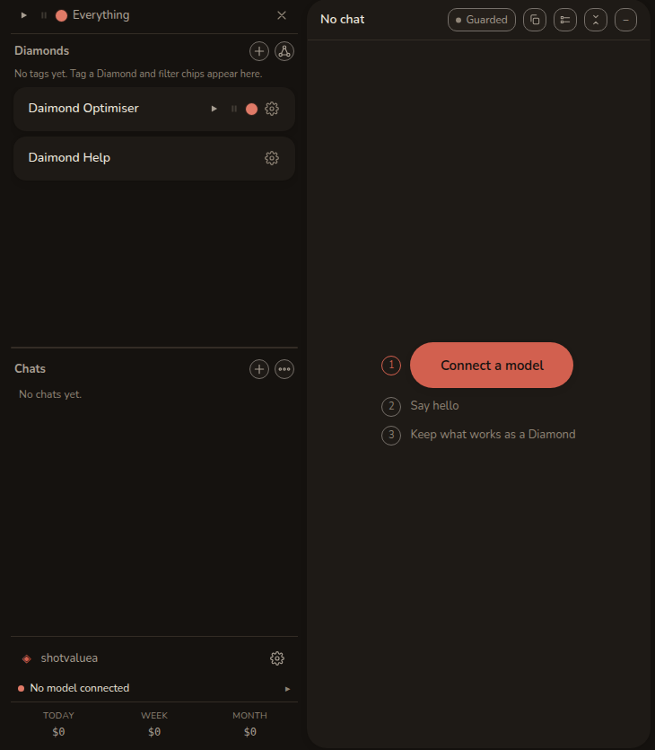
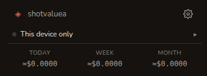

从这里开始
Daimond is an AI workspace that runs in your browser, and your chats, keys and files stay on this device. You connect a model, talk to it, and keep what works.
No server holds your account. Whatever leaves the browser is named on the page of this guide that covers it. The main ones are a message to the model provider you connected, a page fetched for you, a mailbox synced, and an encrypted parcel sent to a device you linked.

Three steps to a first answer
-
Make your account
Type a name, and Daimond generates a passphrase of eight random words and shows it once. Write it down. It unlocks everything stored here, and nobody can reset it. Then choose 创建账户.
A password manager is a fine place for it, since eight random words are hard to guess.
Under the button, Have a passcode or a pairing code? opens two other routes, redeeming a passcode for an account with credits and pairing this browser to a device you already use. If you already have Daimond elsewhere, pair instead of creating, or you will end up with two accounts.
-
Connect a model
A daimon thinks with a model, so connect one. Press Connect a model in the centre, or open the model row at the foot of the rail. There are three routes.
- Your own key. Paste a key from Anthropic, Fireworks AI, OpenRouter, Together AI, Groq or DeepInfra. Your messages go straight to that provider, and we charge nothing.
- Credits. Daimond runs the model for you and draws on a prepaid balance, so there is no provider account to manage. While testing is closed, accounts with credits are given out by passcode.
- A model of your own. 选择 Custom and give the address of any service that speaks the same chat API, including one running on your own machine.
模型和提供商 has the detail.
-
Say hello
Press Say hello, or the + 紧挨着 聊天, then type in the box and send. The answer arrives in the centre panel, where you will spend most of your time.
The chat takes its title from your first line, so a rail of chats reads as a list of subjects.
Then keep what works
A chat is only a conversation. When one has worked something out, press Keep on its row in the rail and it becomes a diamond.
A diamond is a saved project with its own memory, page and files. Work inside it starts from what it already knows, so you stop re-explaining yourself. 对话和 diamond covers it.
What this does that a chat window does not
- It remembers per subject. A diamond carries what you worked out into every later turn, and you can read and edit that memory as a file.
- It works on real files. Point it at a folder and it edits the files in place, inside a fence you set.
- It shows the bill. Each turn is priced on this device as it is spent, from the provider's own figure.
- It can be checked. The code in this browser is public, builds byte for byte from source, and is sealed into a published record. Verify this build in the About dialog checks the one you are running.
The four words this guide uses
- diamond, a saved project with its own memory and page.
- daimon, the assistant that works inside a diamond.
- crystal, what a diamond knows, kept as a file you can read and edit.
- forge, the shared board where proposals about Daimond itself are filed, shown in the Improve panel.
What is on screen
屏幕分三个区域。左边的 侧栏 on the left lists your diamonds and chats, and under a movable divider shows your account, one status line and what you have spent. The centre holds the conversation, with whatever you are reading beside it. The 停靠区 on the right holds what you pull from, such as files, mail, running agents and spending.
Across the top, each panel has a chip that opens or closes it. A fresh account shows six, for diamonds, Chat, Web, Workspace, Tools and Spending, and the rest are one press away in the gallery behind the ⋯ chip. At the far right are the update chip, About, Link another device, this guide and Settings.
界面 walks through all of it, and none of it is needed to get an answer.
One status line

Above the spend row is one line, which reads Locked, Not signed in, No model connected, Offline, Synced，或者手机上的 This device only. It answers the question most worth asking at that moment, showing the most blocking state first.
Press it to open Details, which covers models, tools, permissions, storage, machine, sync and the build you are on. Those are diagnostics, so they stay behind the line until you want them.
把它放在手边
Use your browser's own 安装，或者手机上的 添加到主屏幕 on a phone, and Daimond gets an icon and a window of its own. It is the same page and the same stored work, so nothing is copied and nothing moves.
Daimond updates itself, taking a new build at a quiet moment and not in the middle of a running turn or a half-typed message. The chip beside the top-bar buttons says when one is ready.
Where to go next
对话和 diamond
Reading a long thread, keeping a chat, and what a diamond remembers.
文件、邮件和网页
Getting files in, sharing a folder to your other devices, mail, and reading a page.
你的电脑
Letting a daimon edit real folders and run real commands, inside a fence.
帮手和轮次的运行位置
Agents dispatched to work in parallel, and naming the machine that picks turns up.
安全和修复
What Daimond asks before it acts, what stays private, and what to do when something is wrong.
Ask Daimond
The rail holds a diamond called Daimond Help. It answers from this build and from this guide, and says which page an answer came from.